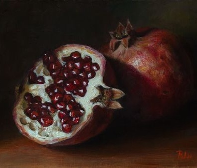
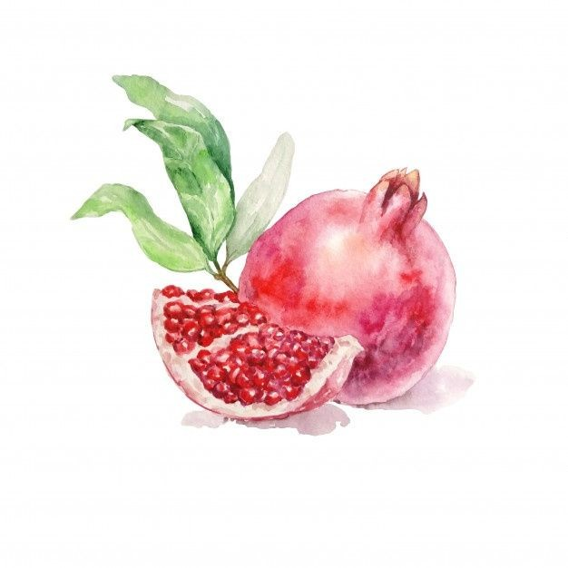

Quais são os benefícios da casca de romã?
A romã está entre as frutas mais saudáveis do planeta. Ela pode ser consumida in natura,como suco ou chá da casca da fruta. O chá da casca é um grande aliado no tratamento de dores de garganta. Com ação antibacteriana e antifúngica, a fruta também pode proteger de gengivite, periodontite e estomatite dentária.
Para que o romã é bom?
Os flavonoides podem ajudar a manter a saúde das artérias, reduzir o colesterol e prevenir ataques cardíacos, além de retardar o envelhecimento. Já em relação às atividades cerebrais, a fruta também melhora as funções cognitivas podendo ajudar a prevenir a doença de Alzheimer.
Qual a melhor forma de consumir romã?
A romã é uma fruta levemente doce e as sementes podem ser consumidas ao natural ou usadas para fazer sucos, saladas e iogurtes. Já as cascas, folhas e caule da fruta podem ser usadas para fazer chás.